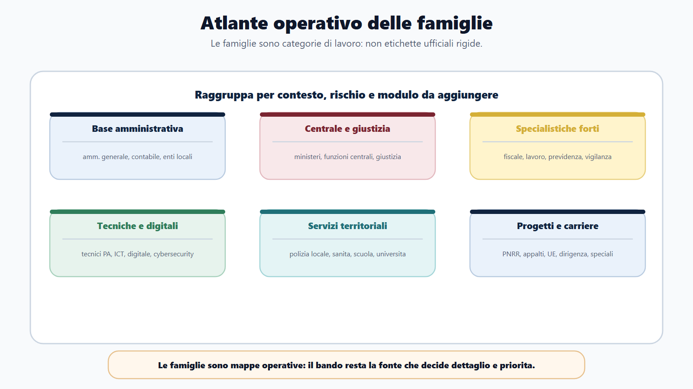
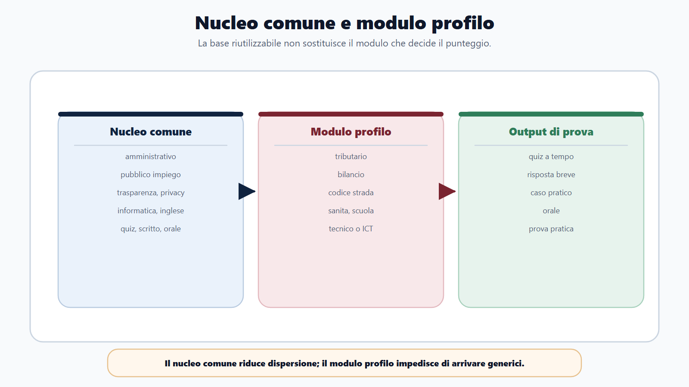
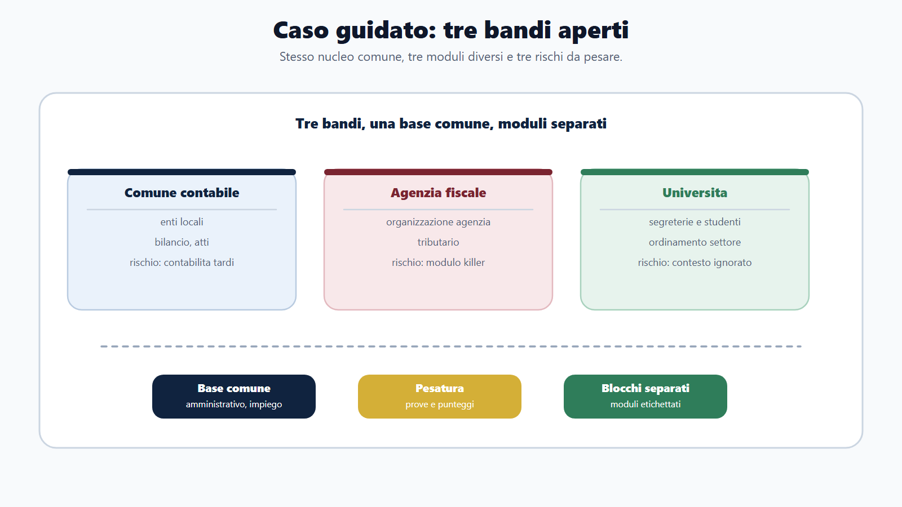
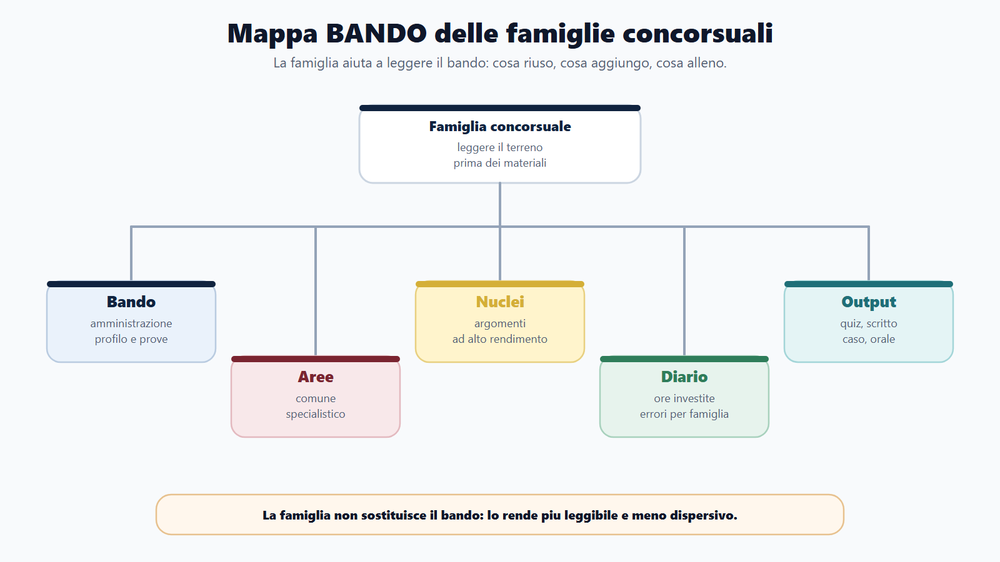
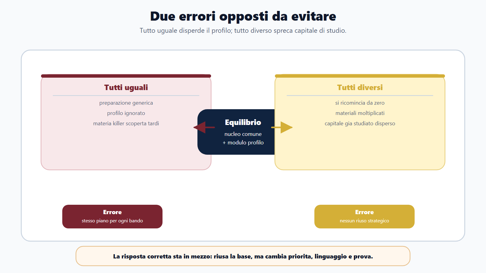
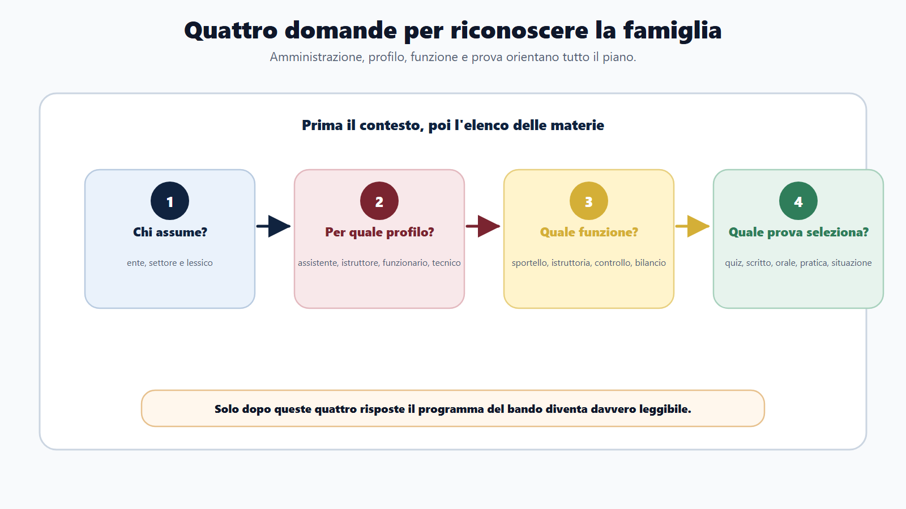

VOL-01 · Capitolo 19
Parte IV · Adattare il metodo ai profili
Le famiglie dei
concorsi pubblici
Molti concorsi condividono un nucleo comune, ma ogni famiglia cambia priorità, linguaggio, prove e rischio principale. La famiglia non è una scorciatoia per saltare il bando: è un modo per leggerlo meglio.
Schema
Atlante famiglie concorsuali

Schema
Nucleo comune modulo profilo

Schema
Caso guidato tre bandi

Schema
Mappa bando famiglie concorsuali

Schema
Due errori da evitare

Schema
Quattro domande famiglia

01 · Due errori opposti
Né tutti uguali, né tutti da zero
Trattare tutti i concorsi allo stesso modo produce una preparazione generica. Pensare che ogni concorso sia un mondo nuovo fa ricominciare da capo, moltiplicare i manuali e disperdere il capitale già costruito. La logica corretta sta in mezzo.
Che cos’è una famiglia
Un gruppo di concorsi che tende a condividere tipo di amministrazione, profili, materie ricorrenti, struttura delle prove, difficoltà tipiche, lessico e errori frequenti. Due concorsi possono chiedere entrambi diritto amministrativo e usarlo in modo diverso.
Esempio di distinzione
In un concorso comunale l’amministrativo serve a procedimento, accesso, atti, organi e responsabili. In un’agenzia fiscale si collega a poteri, accertamento e disciplina tributaria. In un profilo tecnico è cornice per autorizzazioni, contratti e responsabilità.
Scegliere il manuale prima della famiglia. Si studia in ordine e si scopre tardi una materia specialistica pesante, senza tempo per modulo, quiz, casi e ripasso.
02 · BANDO
Quattro domande prima dell’elenco materie
Quando apri un bando, non partire subito dal programma. Prima: chi assume, per quale profilo, quale funzione svolgerà il vincitore, quale prova seleziona davvero. Solo dopo il programma ha senso.
| Domanda operativa | Output | Se la salti | |
|---|---|---|---|
| B — Bando | Quale amministrazione assume? Per quale profilo? Con quali prove? | Identikit del concorso. | Studi un amministrativo astratto, senza contesto. |
| A — Aree | Quali materie sono comuni e quali specialistiche? | Divisione core / modulo. | Tratti tutto come nucleo o tutto come novità. |
| N — Nuclei | Quali argomenti danno più rendimento in questa famiglia? | Lista priorità. | Approfondisci ciò che rassicura, non ciò che seleziona. |
| D — Diario | Dove sto investendo ore? Dove sto sbagliando? | Diario per famiglia. | Mescola quiz di famiglie diverse senza etichettarli. |
| O — Output | Quiz, scritto, caso, orale, pratica? | Simulazione coerente. | Alleni il formato sbagliato per quel profilo. |
Questo concorso a quale famiglia appartiene e che cosa cambia davvero nel mio piano?
Chi assume, per quale profilo, quale funzione, quale prova seleziona. Comune, ministero, agenzia, università o azienda sanitaria cambiano contesto e lessico. Assistente, istruttore, funzionario, tecnico, contabile o ispettivo non richiedono la stessa prestazione.
03 · Nucleo comune
Riutilizzabile, non sufficiente
Nei concorsi amministrativi e para-amministrativi ricorrono spesso costituzionale essenziale, amministrativo, procedimento, accesso, trasparenza, pubblico impiego, codice di comportamento, anticorruzione, privacy, responsabilità, informatica e PA digitale, inglese, logica, capacità di rispondere a quiz, scritto, casi e orale. Questo è il capitale comune. Se lo studi bene, non lo perdi quando cambi bando.
Comune
Che cosa posso riutilizzare? Amministrativo, impiego, trasparenza, prove, metodo.
Profilo
Che cosa distingue questo ruolo? Tributario, bilancio, codice della strada, sanità, catasto, TUEL.
Prova
Come verrà misurata? Quiz, orale, caso, elaborato, prova pratica.
Rischio e taglio
Dove perdo punti anche studiando tanto? Che cosa non approfondire ora?
Confondere «comune» con «sufficiente» è il secondo errore. Nei profili fiscali serve il modulo tributario. Nei contabili il bilancio. Nei tecnici il modulo tecnico. Nella polizia locale il modulo di settore. Il nucleo è la base, non l’intera casa.
04 · Famiglie 1–4
Amministrativo, contabile, enti locali, ministeri
La materia può essere la stessa. Il modo in cui rende punteggio cambia. Il rischio principale è il primo filtro per il piano.
| Famiglia | Che cosa è | Rischio principale | Strategia |
|---|---|---|---|
| Amministrativo generale | Trasversale: comuni, ministeri, enti, università, sanità, camere, agenzie. Assistente, istruttore, funzionario, supporto. | Restare generici: definizioni senza uso in ufficio. | Base forte di amministrativo e impiego; ogni istituto con un esempio di lavoro; orale con collegamenti. |
| Amministrativo-contabile | Aggiunge bilancio, entrate, spese, programmazione, controlli, contratti. Ragioneria, tributi, economato, gare. | Studiare contabilità troppo tardi. | Ciclo entrata-spesa subito; collegare bilancio e atti; «quale atto, chi è competente, quale vincolo finanziario?». |
| Enti locali | Ente vicino al cittadino: organi, atti, servizi, contabilità locale, polizia locale, sociale, tecnico. | Non distinguere organi politici e gestione amministrativa. | Schemi organo/funzione/atto; casi su accesso, impegno, determinazione, deliberazione, ordinanza. |
| Ministeri e funzioni centrali | Ministeri, Presidenza, agenzie o strutture centrali; profili amministrativi, giuridici, contabili, tecnici, ispettivi. | Preparare un ministero come se fosse un comune. | Dopo il nucleo, ordinamento dell’amministrazione; parole chiave del settore; per selezioni multi-amministrazione leggere profili e codici. |
05 · Famiglie 5–8
Giustizia, fisco, previdenza, tecnici
Qui il modulo specialistico spesso decide il risultato. Il nucleo comune resta valido, ma non basta. Il lessico di settore è già una prova.
| Famiglia | Che cosa è | Rischio principale | Strategia |
|---|---|---|---|
| Giustizia | Uffici giudiziari, cancellerie, fascicoli, notifiche, servizi di supporto. Assistente, funzionario, cancelliere, tecnico. | Ignorare il contesto dell’ufficio giudiziario. | Separare materie amministrative e processuali; non studiare procedura avanzata se il bando chiede solo elementi; esempi di ufficio e riservatezza. |
| Agenzie fiscali | Funzionario tributario, giuridico-tributario, tecnico-catastale, economico, informatico. Tributario, civile o commerciale se previsti, organizzazione dell’agenzia. | Considerare il tributario una materia accessoria. | Proteggere tempo per il modulo; nucleo come supporto, non sostituto; schemi sulle differenze tra istituti; applicazione, non solo definizione. |
| Previdenza, lavoro, vigilanza | Enti previdenziali, lavoro, ispettorato. Consulente protezione sociale, ispettore, funzionario lavoro. | Arrivare senza linguaggio del lavoro e della previdenza. | Modulo presto; glossario; casi su richiesta utente, controllo, documentazione, esito. |
| Tecnici con prova amministrativa | Istruttore o funzionario tecnico, ingegnere, architetto, geometra, ambiente, lavori, informatico, catastale. | Sapere la tecnica ma non collocarla nella PA. | Non separare tecnica e amministrazione; casi su permesso, autorizzazione, affidamento, verifica; lessico amministrativo minimo. |
06 · Famiglie 9–12
ICT, polizia locale, sanità, scuola
Profili con identità forte. Prepararli come un concorso amministrativo qualunque, o come una materia scolastica privata, è il modo più rapido per arrivare incompleti.
| Famiglia | Che cosa è | Rischio principale | Strategia |
|---|---|---|---|
| ICT e digitale | Sistemi, reti, dati, sicurezza, più contesto pubblico: identità, protocollo, interoperabilità, privacy, accessibilità, procurement. | Preparare informatica come materia scolastica e ignorare la PA digitale. | Ogni tema ICT collegato a un servizio pubblico: autenticazione, documento, protocollo, dato, conservazione, responsabilità. |
| Polizia locale | Famiglia autonoma negli enti locali: territorio, circolazione, sanzioni, regolamenti, sicurezza urbana. | Trattarla come un profilo amministrativo qualunque. | Separare parte comunale, sanzionatoria e di sicurezza; casi con cittadini; requisiti fisici solo se previsti, senza presumere. |
| Sanità amministrativa | Non è la professione sanitaria: personale, acquisti, CUP, documentazione, privacy, bilancio, organizzazione. | Sottovalutare privacy, organizzazione e lessico sanitario. | Privacy e riservatezza subito; esempi di sportello; ordinamento sanitario come modulo se il bando lo chiede. Dire troppo sui dati è un errore grave. |
| Scuola, ATA, università | Assistente amministrativo o tecnico, funzionario universitario, segreteria studenti, ricerca. | Studiare solo amministrativo generale e ignorare l’ordinamento del settore. | Verificare se il bando chiede scuola, università o ricerca; casi di segreteria, graduatorie, accesso, privacy, servizio a famiglie o studenti. |
07 · Famiglie 13–15
Servizi, fondi, carriere speciali
Meno standardizzate, o troppo specifiche per il volume base. Vanno riconosciute, non sviluppate in profondità qui. La logica BANDO resta; il modulo dedicato diventa necessario.
| Famiglia | Che cosa è | Rischio principale | Strategia |
|---|---|---|---|
| Socio-educativo, cultura, comunicazione, ambiente, protezione civile | Educatore, assistente sociale, bibliotecario, comunicazione, tecnico ambiente, musei, turismo. | Non capire quale parte del programma è davvero selettiva. | Identificare il servizio concreto; separare norme generali e disciplina di settore; esempi di relazione con utente, progetto, procedimento, responsabilità. |
| Appalti, PNRR, fondi, project support | Gare, rendicontazione, digitalizzazione, investimenti, controlli. Non basta il Codice dei contratti. | Studiare solo la gara e non esecuzione e rendicontazione. | Ciclo fabbisogno-programmazione-affidamento-esecuzione-controllo-pagamento-rendicontazione; collegare contratti e contabilità. |
| Dirigenza, carriere speciali, corpi uniformati | Dirigente, prefettizia, diplomatica, polizia e forze armate, carriere speciali. Prove e requisiti spesso molto specifici. | Applicare un metodo da concorso base a una selezione avanzata. | Usare questo libro per metodo e nucleo; valutare subito requisiti, prove e tempi; aggiungere moduli dedicati; non sottovalutare orale, temi e assessment. |
08 · Sequenza
Famiglia, profilo, programma, materiali, piano
Questa sequenza impedisce allo studio di diventare una raccolta disordinata. Il bando resta sempre la fonte principale. Un candidato strategico non studia «per concorsi»: studia per famiglia, profilo e prova.
Famiglia
Riconosci il terreno: ente, lessico, rischio. Non è una categoria ufficiale rigida: è una mappa pratica.
Profilo
Mansioni e funzione, non solo il titolo del concorso. Assistente, istruttore, funzionario, tecnico non chiedono la stessa prestazione.
Programma
Comune, profilo, accessorio. Individua la materia killer: quella che, se ignorata, elimina.
Materiali e piano
Poi i testi e il calendario. Invertire l’ordine è l’errore tipico.
09 · Caso guidato
Tre bandi, un nucleo, tre moduli
Istruttore amministrativo-contabile in un Comune, funzionario giuridico-tributario in un’agenzia fiscale, assistente amministrativo in un’università. Tutti e tre chiedono amministrativo, pubblico impiego, inglese e informatica. «Preparo un blocco unico e poi faccio quiz» è incompleto.
Si studia insieme
Amministrativo, pubblico impiego, inglese, informatica. È il capitale da non ripetere tre volte. I quiz, però, vanno etichettati per famiglia: mescolarli senza etichetta confonde il diario.
Non si mescolano
Comune: enti locali, contabilità, bilancio, atti, servizi. Agenzia: tributario, organizzazione, procedimenti fiscali. Università: organizzazione, segreterie, studenti, personale. Poi si pesano le prove e si sceglie il bando prioritario.
10 · Verifica
Due domande da saper spiegare
Perché non studiare allo stesso modo un concorso comunale, uno ministeriale e uno fiscale, anche se alcune materie sono identiche?
Le materie comuni consentono di riutilizzare parte della preparazione, ma il profilo cambia contesto, priorità e prestazione. Nel concorso comunale l’amministrativo si collega a organi, atti, servizi, procedimento e bilancio locale. Nel ministeriale all’organizzazione centrale e alla funzione dell’amministrazione. Nell’agenzia fiscale il modulo tributario può diventare determinante. Il bando resta la fonte decisiva per distribuire tempo e scegliere gli output.
Se un bando prevede amministrativo, impiego, inglese e informatica, posso usare lo stesso piano di qualsiasi concorso amministrativo?
No. Puoi riutilizzare una parte del piano, ma devi verificare profilo, amministrazione, prove, punteggi e materie specialistiche. Due bandi con quattro materie comuni possono avere rischi completamente diversi.
11 · Mini-esercizio
Un bando reale, una griglia
Se non sai compilare una riga, non hai ancora decodificato il bando. Quella riga è la prima cosa da cercare nel documento ufficiale, non in un riassunto.
| Voce | Che cosa stai verificando |
|---|---|
| Amministrazione e profilo | Chi assume e per quale funzione concreta, non solo il titolo. |
| Famiglia concorsuale | Il terreno: lessico, rischio, modulo da aggiungere. |
| Prove previste | Quale prova elimina di più e quale output alleno. |
| Materie comuni / di profilo / killer | Cosa riuso, cosa aggiungo, cosa se ignorato elimina. |
| Cosa posso riutilizzare / cosa è modulo | Capitale già costruito e delta da coprire. |
12 · Da tenere ferme
Cinque regole, con il perché
1. Una famiglia è una mappa pratica, non una categoria ufficiale rigida, perché serve a capire che cosa riusare e che cosa adattare.
2. Il nucleo comune riduce la dispersione, perché una parte della preparazione è capitale, non un concorso isolato.
3. Il modulo di profilo decide spesso il risultato, perché confondere «comune» con «sufficiente» lascia scoperta la materia killer.
4. Il bando resta sempre la fonte principale, perché la famiglia aiuta a leggerlo, non a sostituirlo.
5. Prima famiglia, poi profilo, poi programma, poi materiali, poi piano, perché scegliere il manuale per primo è l’errore che brucia le settimane decisive.
Prossimo capitolo
Mappe profilo: cosa resta comune e cosa cambia
Dalla famiglia alla scheda di studio: core, modulo, prova reale, semaforo e pesatura del tempo. La preparazione precedente non si butta: si converte.